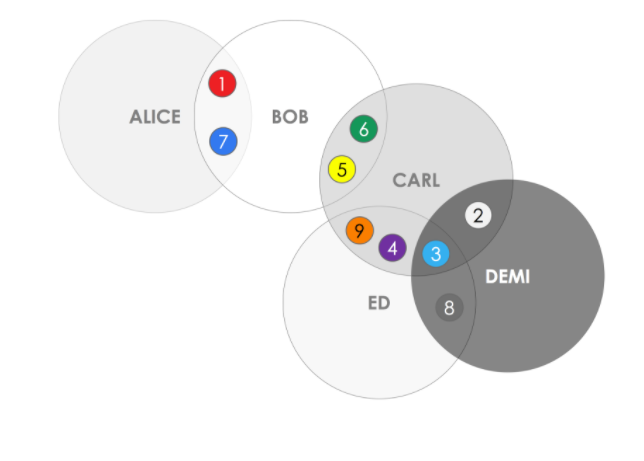

FAQ 
Table of Contents
HashgraphQ: What is a hashgraph?
A: A hashgraph is a data structure and consensus algorithm. It is fast, secure, and fair.
Q: How does a Hashgraph work?
A: A hashgraph uses Gossip about Gossip and Virtual Voting techniques to achieve fast, secure, and fair consensus among nodes.
Q: What is Gossip about Gossip?
A: Calling any random node and telling that node everything you know that it doesn't know. It refers to attaching a small additional amount of information that consists of two hashes that contain the last two people the node communicated with (gossiping about the information gossiped).
Q: Does Hashgraph use a cryptocurrency?
A: There is no public ledger or cryptocurrency for Hashgraph. This technology is currently being implemented on permissioned/private networks.
Q: What does Byzantine Fault Tolerance guarantee?
A: We know when we'll reach a conesnsus, have a guarantee that we'll reach that consensus, and have math proofs that make no assumptions about the Internet speed which could be impacted by firewalls, DDoS, viruses, botnets, etc. There is also fair ordering and time stamping on every event.
Q: How fast is a Hashgraph?
A: A Hashgraph is very fast and has a low consensus latency. This lets it have a large range of use cases and applications. Performance tests are currently being conducted on this new technology.
Q: What is Byzantine Fault Tolerance (BFT)?
A: BFT is a consensus algorithm that guarantees a moment in time that all participants reach a consensus, know that a consensus has been reached, and they are never wrong. With Blockchain's Proof-of-Work, participants slowly become more confident of consensus with every block confirmation. There are different levels of BFT which depend on network assumptions and transmissions of messages. The strongest form of BFT is asynchronous.
Q: What is Asynchronous BFT?
A: Asynchronous BFT allows for malicious actors controlling the network and deleting/slowing down messages of their choosing. The only assumptions made are that less than 1/3 of the nodes on the network are attackers and some messages are transmitted over the internet. Some systems are partially asynchronous and are only secure if the attackers don't have too much power and don't manipulate message timing as much.
Q: How does hashgraph prevent Sybil attacks?
A: A Sybil attack is an attempt to compromise the network by creating large numbers of identities that are directed to act in collusion to inappropriately impact the network. Protecting against Sybil attacks can be done by appropriately allocating and weighting votes of different nodes.
Q: How does Hashgraph prevent against DDos attacks?
A: A Distributed Denial of Service (DDoS) attack occurs when its possible to disrupt transaction flow for an entire network by targeting a single or a few computers. Hashgraph doesn't use Proof-of-Work or have a leader that will solve a hash and publish a block like with Blockchain. Leader-based systems similar to the Blockchain give special permissions to a node and are very susceptible to DDoS since the current leader is a bottleneck and can be targeted. So, Hashgraph provides DDoS resilience without the inefficiency and cost of Proof-of-Work.
Q: How is a Hashgraph fair?
A: Fairness is the ability to prevent ordering of transactions from being unduly manipulated. Hashgraphs are fair because they serialize all transactions with cryptographic timestamping. This is different from the Blockchain since Blockchain miners determine the order in which transactions are placed in each block. Hashgraphs order transactions according to the median timestamp of when the node population received them to ensure that they are recorded fairly.
Q: What is the Hedera hashgraph platform?
A: The Hedera hashgraph platform provides a new form of distributed consensus; a way for people who don't know or trust each other to securely collaborate and transact online without the need for a trusted intermediary. The platform is lightning fast, secure, and fair, and, unlike some blockchain-based platforms, doesn’t require compute-heavy proof-of-work. Hedera enables and empowers developers to build an entirely new class of distributed applications never before possible.
Q: What is the Hedera Hashgraph Council?
A: The Hedera Hashgraph Council will be the governing body of the Hedera hashgraph network. The council will consist of up to 39 leading organizations and enterprises in their respective fields, with membership designed to reflect a range of industries and geographies, to have highly respected brands and trusted market positions, and to encourage a wide variety of perspectives. The Governing Members will elect the Governing Board and also contribute expertise through subcommittee membership. Hedera’s governance terms ensure no single member will have control, and no small group of members will have undue influence over the body as a whole.
Q: Is the Hedera hashgraph network decentralized?
A: All Governing Members of the Hedera Hashgraph Council will have equal voting rights and all except Swirlds, Inc. will be limited to a three year term with a limit of two consecutive terms. (Swirlds, Inc., the owners and licensor of the hashgraph technology, will retain a permanent seat on the council.) The highly distributed network will expand to many millions of nodes voting on the order of transactions across at least five continents. This separation of governance from consensus is designed to ensure continued decentralization over time.
Q: Is there a Hedera hashgraph cryptocurrency?
A: The Hedera hashgraph network will have a native cryptocurrency, which is a utility token that grants token holders access to distributed applications on the platform. The token may also be “staked” and used to run a node (that is, adding CPU to the Hedera public network), thereby providing the network security within the public ledger. We expect the token to act as a unit of value to motivate responsible use and governance of the platform.
Q: Is the source code open source?
A: The Hedera hashgraph source code will be open review, which provides transparency and allows for contribution, while also bringing stability to the network by preventing forking. Forking, or splitting, is a prevalent issue with some public ledger platforms as it artificially inflates supply.
Q: Is the Hedera hashgraph platform patented?
A: Yes, Swirlds has granted Hedera hashgraph a license to the hashgraph consensus algorithm.
Q: What role does Swirlds have in the Hedera hashgraph platform?
A: Swirlds is the licensor of the underlying hashgraph technology that enables the Hedera hashgraph platform, and will continue to develop the technology. Swirlds is a member of the Hedera Hashgraph Council and will have the same voting rights as every other Governing Member. Prior to formal launch of the plaform and the council, Swirlds may retain control of governance and network development.
Q: Do I require a license to develop on the Hedera hashgraph platform?
A: No, you do not require a license or need permission to use, or develop on, the Hedera public network. Applications that are developed on the platform can implement any licensing model.
Q: Are there transaction fees?
A: Yes, token holders will pay transaction fees to access distributed applications on the Hedera hashgraph platform. These transaction fees are paid to Hedera and the nodes in the network that contribute to the consensus mechanism.
Q: What programming languages are available for developers?
A: The Hedera hashgraph platform will support Java™ and Solidity™.
Q: Who can run a node?
A: The Hedera hashgraph platform will start with a small number of nodes during the testing phase, but we anticipate this will become available to anyone who wants to host a node (and meets basic requirements for bandwidth, CPU, and storage) in the future.
Q: Is there a test network?
A: There is a test network currently running for Hedera Hashgraph Council members.
Q: When will the Hedera hashgraph platform go live?
A: We expect the beta will go live in 2018.
Q: What is bank-grade consensus?
A: Hashgraph is the only bank-grade consensus algorithm as a result of the following properties: Mathematical proof of asynchronous Byzantine fault tolerance; Resilience to DDoS attacks, network partitions, sybil attacks and firewall/virus attacks; and Mathematical proof of fairness of ordering, access, and timestamps.
Q: Why is Hashgraph patented?>
A: Hashgraph is currently only available on a private network so its patents allow for market advantage in enterprise / commercial applications. This is not designed to stifle creativity or expansion of the emerging ecosystem, but to protect technological innovations that took years to develop.
Source: hederahashgraph.com, https://www.reddit.com/r/hashgraph/comments/7d76ie/new_to_rhashgraph_please_read_this_post_first_faq/
TangleQ: What is IOTA?
A: IOTA is an open-source distributed ledger protocol launched in 2015 that goes 'beyond blockchain' through its core invention of the blockless ‘Tangle’. The IOTA Tangle is a quantum-resistant Directed Acyclic Graph (DAG), whose digital currency 'iota' has a fixed money supply with zero inflationary cost. IOTA uniquely offers zero-fee transactions and no fixed limit on how many transactions can be confirmed per second. Scaling limitations have been removed, since throughput grows in conjunction with activity; the more activity, the more transactions can be processed and the faster the network. Further, unlike blockchain architecture, IOTA has no separation between users and validators (miners / stakers); rather, validation is an intrinsic property of using the ledger, thus avoiding centralization. IOTA is focused on being useful for the emerging machine-to-machine (m2m) economy of the Internet-of-Things (IoT), data integrity, micro-/nano- payments, and other applications where a scalable decentralized system is warranted.
Q: What is a seed?
A: A seed is a unique identifier that can be described as a combined username and password that grants you access to your IOTA. Your seed is used to generate the addresses and private keys you will use to store and send IOTA, so this should be kept private and not shared with anyone. If anyone obtains your seed, they can generate the private keys associated with your addresses and access your IOTA.
Q: What is a non reusable address and how does it work for IOTA's Tangle?
A: Contrary to traditional blockchain based systems such as Bitcoin, where your wallet addresses can be reused, IOTA's addresses should only be used once (for outgoing transfers). That means there is no limit to the number of transactions an address can receive, but as soon as you've used funds from that address to make a transaction, this address should not be used anymore.
Q: How does Tangle reach consensus?
A: Apart from the data structure, the other major difference is how IOTA achieves consensus and how transactions are made. As mentioned previously, there are no miners. What this means is that each participant in the network that wants to make a transaction has to actively participate in the consensus of the network by approving 2 past transactions. This attestation on the validity of two past transactions ensures that the network achieves consensus on the current state of approved transactions, and it enables a variety of unique features that are only seen in IOTA.
Q: How is Tangle scalable?
A: IOTA can achieve high transaction throughput thanks to parallelized validation of transactions with no limit as to the number of transactions that can be confirmed in a certain interval.
Q: How does decentralization work for Tangle?
A: IOTA has no miners. Every participant in the network that is making a transaction, actively participates in the consensus. As such, IOTA is more decentralized than any Blockchain.
Q: How is Tangle quantum-immutable?
A: IOTA utilized a next generation trinary hash function called Curl-p, which is quantum immune (Winternitz signatures).
Q: What makes Tangle different from the Blockchain?
A: Both are decentralized consensus systems, but with different consensus protocols. IOTAS Tangle is set up as a directed acyclic graph (DAG) and the blockchain is set up as a chronological list of connected merkle trees. DAG consensus differs from Blockchain in the same way that linked lists differ from arrays; they are two different data structures. The Tangle achieves consensus by confirming nearby transactions, where the blockchain confirms the validity of all transactions and all nodes must agree on that.
Q: How does Tangle prevent against data loss and tampering?
A: Like blockchain, the tangle has a consensus protocol which protects the truth of the ledger.
Q: Does Tangle have any performance and maintenance requirements?
A: The Tangle receives snapshots as maintenance for when the Tangle gets too large. See our guide for more information.
Q: Does Tangle have any special capabilities or limitations?
A: The Tangles capabilities are as boundless as human imagination but most DAG consensus protocols are specially designed to thrive in an Internet of Things industry. It is limited by adoptance; the less adopted the less valuable.
Q: Are there any projects under Tangle that are Byzantine Fault Tolerant?
A: No, not at this time.
Q: Are there any projects under Tangle that are Asynchronous Byzantine Fault Tolerant?
A: No, not at this time.
Q: Is it possible to create a private testnet environment with Tangle?
A: You can create a private testnet using IOTA, which is what utilizes the tangle technology.
Q: Does Tangle have its own cryptocurrency?
A: You can use the tangle to create a tangle-based cryptocurrency. The most prominent today is IOTA. (There are other companies using DAG, like Byteball and Constellation).
Q: What attacks is Tangle resistant from?
A:
- Sybil Attacks
- Large Weight Attacks
- Double Spending Attacks
- Parasite Chain Attacks
- Splitting Attacks
Q: Does Tangle utilize smart contracts? If so, what languages do they support?
A: DAG technology can utilize smart contracts. ByteBall is one such company utilizing smart contracts and DAG to perform transactions with conditions. It doesn’t have a coding language for the smart contracts, rather it has predefined contracts that users can use as they please.
Q: What are some special use cases/applications for Tangle?
A: Digital Twins in a Machine based economy. Basically, every machine has a digital representation of themselves, and that is their digital twin. You can keep record and make transactions in a machine based economy using this idea.
Q: Does Tangle utilize mining? If so, how is that done?
A: No, there is no mining in Tangle. It’s consensus algorithm does not call for it.
Q: How can someone search, add, or view their data using Tangle?
A: They would have to set up a permanent node and a storage place for every update of the tangle.
Q: How does Tangle ensure confidentiality, integrity, and availability of its data and transactions?
A: Similarly to all other decentralized consensus systems, the tangle is innately tamper proof and valid. To break the tangles confidentiality, integrity, or availability a malicious entity would need to have an unreasonable amount of CPU resources.
Q: How do you know if your transaction is verified on the Tangle?
A: To send a transaction using Tangle technology you will need to use an application, for example the IOTA wallet. Once a transaction is received and verified, it will show up in the history of the IOTA wallet. You can run a full node to view the full history of the tangle, as the light node will only report your history.
Q: Are there blocks on Tangle?
A: No, there are only ‘transactions’. Each transaction is connected to other transactions, verifying them and being verified as well. These generate the links of the DAG, all which are hashed together similarly to blockchains hashing.
Q: Are there any hardware requirements for using Tangle?
A: 2 GB Ram recommended for hosting a full node. The more peers connected to the full node the less hardware requirements are needed as the verifying transaction resource cost is split amongst the nodes.
Q: How does Tangle mitigate any failure on the network?
A: IOTAs Tangle uses a consensus algorithm to protect from the various attacks such as quantum attacks, double spending, parasite attacks, sybil attacks, and splitting attacks.
Q: How does Tangle maintain a transaction history?
A: The Tangle maintains a transaction history across all full nodes, and it is viewable in applications such as IOTA’s wallet.
Q: What is a snapshot? When and why do they happen?
A: The concept is to prune the history of nodes but save the balance, easing the burden of many nodes and retaining the validity of the DAG. This will make each transaction start fresh from a valid data set. (Note; IOTA is developing permanodes to keep the entire history of the DAG which will not be affected by snapshots). A snapshot occurs to prevent IOTAs Tangle from getting to large. IOTA has plans to do automated snapshotting in accordance with the Tangles growth.
Q: What happens if the Tangle structure grows quickly? How is the data stored?
A: The data is stored on full nodes and permanodes. As the data structure grows, theoretically we have more transactions being verified then coming in (as one transaction must verify two), thus mitigating the risk of the Tangle getting uncontrollably large. If the Tangle is getting two large in terms of the amount of data being stored on each node is too much, then a Snapshot can occur which will reduce the size of the Tangle.
Q: How does pruning happen on the Tangle? What is pruning?
A: Pruning occurs in Snapshots. Basically, each full node is pruned and data pertaining to transaction history is erased, with balances of each seed being saved and retained. Pruning refers to trimming down, and in this case it refers to trimming down the data required for each full node to store. (note: permanodes are never pruned)
Q: How will the tangle be sharded?
A: There are no plans for IOTA’s tangle to be sharded.
Q: What causes the Tangle to split into multiple subtangles? How are they managed?
A: A subtangle is an offline tangle created by a full node. This subtangle can then become verified by a transaction on the main tangle, which in turn verifies every previous transaction in that subtangle. These are managed with the tip selection algorithm which favors newly created transactions (a subtangles transaction is reference on the transaction it last verified before the subtangle was built).
Q: How does IOTA protect against an attack that would continuously split the Tangle?
A: See the whitepaper on the Tangle, specifically the section regarding the splitting attack.
Q: What advantages does tangle have over the blockchain?
A: The Tangle has is very scalable and claims to have fee less, almost instantaneous transactions. The biggest advantage is that as the Tangle grows, speed does not suffer. Where as with blockchains, the larger the blockchain gets, the more slow it becomes. Because of this speed, the Tangle is more prone for use in an internet of things environment.
Q: What is IOTA’s main goal?
A: IOTA’s main goal is to become a leader in the micro transaction and Internet of Things industry.
Q: How high will the proof-of-work have to be for a transaction in order for the network to be secure against attackers?
A: The Tangle does not use Proof of Work to protect against attackers; it uses a tip selection algorithm and a weight based transaction system to defend against attackers. The proof of work does help mitigate spammers.
Q: Is the Tangle quantum-resistant?
A: Yes.
Q: Does each full node store the entire Tangle since the last snapshot?
A: Once the newest snapshot is saved, that's the only thing in the Tangle. A Full node can however store previous snapshots on external hard drives if so desired.
Q: What does the coordinator do on a Tangle?
A: The coordinator acts as a pair of training wheels to protect it from outside attacks in its early stages of infancy. Because the Tangle isn’t sufficiently supported to be able to withstand all attacks, the Coordinator acts as it’s guardian. Once the Tangle is sufficiently supported, IOTA will get rid of the Coordinator (in fact the coordinator is not needed currently, but stays because the risk is still too significant).
Q: Where does the complete ledger persist if a user transaction is responsible for verification to further the network? Do they exist on persistent server nodes and if so, what is the incentive to run this type of node?
A: Full nodes is where the complete ledger resides, and light nodes assist by connecting to full nodes. There is no incentive for running a full node other than contributing to the safety and authenticity of the network.
Q: How does verification work? What kind of search or filter algorithm is used to make sure that all the transactions of an address are collected and the total sum/difference of their balance is properly calculated?
A: To issue a transaction, that node must verify two other transactions.Verification differs from DAG to DAG but the Tangle uses a tip selection algorithm to determine which new transactions are chosen to be verified .
Q: How does Proof of Work in IOTA work? Does it search for the nonce for the right number of leading zeros like Bitcoin?
A: The proof of work is minimal. You need low proof of work for internet of things devices, and there is no mining in IOTA, thus there is no need for a proof of work that is adjustable (there is no incentive to mine). The only proof of work that is there is just the work required to send out and verify transactions.
Q: Is the IOTA node software open source?
A: Everything, except the coordinator, is open source.
Q: If there is no mining in IOTA and the supply is set, who owns them?
A: There was an Initial Coin Offering for IOTA. After that, the coins have been moved from people trading with each other.
Q: Does the lack of a Blockchain make Tangle insecure?
A: No. The blockchain and the tangle are two different consensus systems entirely.
Sources: https://www.reddit.com/r/Iota/comments/7irl3l/information_and_faq/, https://docs.iota.org/introduction/what-is-iota, https://medium.com/@mistywind/iota-fud-answered-by-a-non-techie-enthusiast-2312325fddb6 , https://steemit.com/technology/@steemhoops99/iota-snapshot-what-is-it , https://iota.stackexchange.com/questions/492/how-can-iotas-proof-of-work-provide-sufficient-network-security , https://btcmanager.com/dag-vs-blockchain/
HyperledgerQ: Where can I learn more about hyperledger?
A: You can visit hyperledgers homepage at: https://www.hyperledger.org/
Q: Who created Hyperledger?
A: It was created by the Linux Foundation in December 2015.
Q: What is Hyperledger?
A: Hyperledger is a organization whose foundation is based around improving blockchain like technologies. Hyperledger incubates blockchain projects and provides a set of guidelines their architecture should follow. Projects are open source and collaborate together.
Q: What is Hyperledger’s main goal?
A: Their main goal is to provide a platform for blockchain technologies to grow, collaborate, and standardize components and design necessary for the technology.
Q: Why are there different projects of hyperledger?
A: Hyperledger incubates projects as they are proposed to the organization. Each project is its own architecture, however they all follow the architectural standards that hyperledger decides necessary. Each project is built upon these standards but may have very different uses.
Q: What are the Hyperledger Projects?
A: There is currently Hyperledger Fabric, Sawtooth, Burrow, Iroha, and Indy. As well as tools being Hyperledger Cello, Composer, Explorer, and Quilt.
Q: What is Hyperledger Fabric?
A: Fabric is an architecture focused on a permission based blockchain with high modularity across its components.
Q: How does Hyperledger Fabric compute consensus?
A: Fabric uses permissioned-voting and breaks consensus into 3 phases: Endorsement, ordering, and validation. A transaction is endorsed by a set policy such as a number of signatures. Ordering then commits the transactions, and validation verifies it.
Q: What makes Hyperledger Fabric unique?
A: Fabric incorporates a channel system where data can be made obscur by having it only shared by nodes within a channel. Fabric can also be adjusted to determine what data is shared within the channels, and what is shared to all nodes.
Q: What is Hyperledger Sawtooth?
A: Sawtooth is an architecture built around the idea of a core for applications to be built off. Essentially sawtooth can run different types of blockchains and even multiple blockchains on the same network.
Q: How does Hyperledger Sawtooth compute consensus?
A: Sawtooth supports multiple types of consensus to be used, ranging between Proof of elapsed time(PoET), PoET simulator, and a Dev mode.
Q: What makes Hyperledger Sawtooth Unique?
A: Sawtooth offers the ability to run multiple blockchains off the same core. Meaning multiple applications can run on the same system. Sawtooth also features a parallel scheduler that maintains the blockchain so transactions can run simultaneously.
Q: What is Hyperledger Burrow?
A: Hyperledger Burrow is a client that is designed to execute Ethereum smart-contracts.
Q: What is Hyperledger Iroha?
A: Hyperledger Iroha is aimed to create reusable components and provide an API to support C++ as well as mobile environments.
Q: How does Hyperledger Iroha computer consensus?
A: Iroha computers consensus through a Byzantine fault tolerant algorithm called Sumeragi. This means that a validation peer must sign the transaction and then broadcast it to at least 2f+1 peers to sign.
Q: What makes Hyperledger Iroha Unique?
A: Iroha offers a unique implementation of C++ and mobile application support. Iroha also offers a peer reputation system to enhance trusting of peers.
Q: What is Hyperledger Indy?
A: Hyperledger Indy is a decentralized identity system to be incorporated into blockchains. It provides tools and components where independent identities can be created and maintained on a ledger.
Q: What is Hyperledger Cello?
A: Cello is a tool project aimed to reduce the effort of creating, managing and terminating blockchains.
Q: What is Hyperledger Composer?
A: Composer is a set of tools that allows for simple implementation of blockchains for business owners and developers.
Q: What is Hyperledger Explorer?
A: Explorer is a tool aimed to create a user-friendly web applications to interact with blockchains.
Q: What is Hyperledger Quilt?
A: Quilt is an implementation of interledger protocol, which is used to make transactions across different ledges.
Q: How does Hyperledger prevent against data loss and tampering?
A: Hyperledger states that all projects require cryptographic tools designed around confidentiality and privacy are made available. Hyperledger projects also inherently have blockchain security features through consensus and issuing protocols for each of its architectural layers. This includes privacy services, P2P protocol that works with internet firewall, proxies, and other security features, as well as secure smart-contracts.
Q: Do Hyperledger projects have any performance and maintenance requirements?
A: Each project is a very different architecture from each other and offers varying ways to implement a blockchain. This makes performance and maintenance based on the implementation of the project.
Q: What are the required features hyperledger implements?
A: All projects must offer Private transactions and confidential contracts. Provide a concepts of identity and security for these identities. All projects muster have interoperability and portability. Hyperledger also has a major focus on modularity.
Q: What are the architectural features hyperledger states?
A:
Q: Do Hyperledger projects have any special capabilities or limitations?
A: Each project is designed around high modularity and customizability. Almost all projects can be fit to the users needs.
Q: Are there any projects under Hyperledger that are Byzantine Fault Tolerant?
A: Hyperledger Indy, Iroha, and Sawtooth all provide Byzantine fault tolerance.
Q: Is it possible to create a private testnet environments through Hyperledger projects?
A: Yes, almost all Hyperledger projects are intended to be used within a private system.
Q: Does Hyperledger have its own cryptocurrency?
A: Hyperledger does not natively have a cryptocurrency.
Q: What attacks are Hyperledger projects resistant from?
A: Hyperledger projects are inherently resistant to data tampering and data loss through decentralization. Hyperledger protocol also accounts for cryptography and tools to keep data and identities private when needed. Many Hyperledger projects are designed for private networks and most require a doorman to grant verified nodes entry to the network, improving trust between nodes.
Q: Do Hyperledger projects utilize smart contracts? If so, what languages do they support?
A: Yes, Fabric, Sawtooth, Burrow, and Iroha all support smart contracts/chaincode. Each features different languages to implementing, from Fabric enabling any language, to Iroha using java.
Q: What are some special use cases/applications for Hyperledger projects?
A: Use cases are highly diverse from banking and financial services to supply chain support. A list of current hyperledger use cases can be found here: https://wiki.hyperledger.org/groups/requirements/use-case-inventory
Q: Does Hyperledger utilize mining? If so, how is that done?
A: Hyperledger Sawtooth using a mining consensus called Proof of Elapsed Time, this method requires very little computational power and provides a fair consensus through a lottery.
Q: How can someone search, add, or view their data using Hyperledger projects?
A: Each hyperledger projects offers a different way of storing and sharing data, this includes customizability in how what data is shared among nodes, and what is kept private. Throughout the projects, data is held within the ledger and can be access by a queset and keys, based on the permission of the node attempting to access the data. Based on the consensus used within the project data is added differently and entirely depends on the use case of the system.
Q: How does Hyperledger ensure confidentiality, integrity, and availability of its data and transactions?
A: Hyperledger offers a wide range of standard cryptography and privacy policies for the projects to follow. The projects allow for data to be private and confidential. The ledger technologies and consensus algorithms ensure integrity, and the data that is deem available to a node is able to be accessed by this node. These features follow true for all projects within hyperledger.
Q: How is validation done through Hyperledger projects?
A: Hyperledger projects offer a consensus module by design that is responsible for confirming transactions. This module is pluggable and configurable in order to offer different policies and edit the policies of the module used. Validation is based upon what type of consensus is used and the policies of the system, it is decided by the developer of the system.
Q: What are the main differences between Hyperledger’s framework projects?
A:
- Hyperledger Burrow is built specific to the Ethereum Virtual Machine.
- Hyperledger Fabric offers configuration of nodes, smart contracts, consensus and membership services so it may be adjusted to the use case needs.
- Hyperledger Iroha is focused on mobile applications and C++ support
- Hyperledger Sawtooth uses a different consensus method called Proof of Elapsed Time and is focuses on running multiple blockchains on a single core.
Q: Are blocks mined in Hyperledger?
A: No, many projects rely on a validating peer and do not mine blocks.
Q: Are there any hardware requirements for using Hyperledger projects?
A: Hardware requirements must be assessed by the needs of the use case and what framework will be used.
Q: How does Hyperledger mitigate any failure on the network?
A: Because of distributed ledger technology the data is stored throughout the nodes of the network, if a node is lost, the data is not.
Q: How do Hyperledger projects maintain a transaction history?
A: Many hyperledger projects rely on storing transactions within a ledger, however different from many other blockchains. Hyperledger projects offer the ability for nodes to maintain their own private ledger as well as deciding what information is shared to other nodes. Because of hyper ledgers core feature of modularity, the way transaction history is stored depends on the needs of the use case and can change to what is necessary.
Q: What are the main differences between Hyperledger projects and other Blockchains?
A: Hyperledger focuses on private use cases, with high modularity, and no native cryptocurrency.
Q: Why are Hyperledger projects better than existing Blockchains?
A: Hyperledger projects are specifically designed for business needs with no inherent cryptocurrency. This means that hyperledger can focus on the needs that many existing blockchains fail to meet by diverting their focus into improving the distributed ledger technologies. These Projects are also designed around Hyperledgers standard features and provides a collaborative environment. This means these projects are highly customizable, scale better, and computer transactions must fast, and can be adjusted to the use cases needs.
Q: Is Hyperledger quantum-resistant?
A: Hyperledger is not quantum-resistant, however many of its frameworks are designed around private systems unlike cryptocurrencies. Gaining access to this system by breaking through non-quantum resistant crypto barriers may still be a threat.
Q: How many peers in the network need to endorse a transaction?
A: The number of peers required to endorse a transaction is driven by the endorsement policy that is specified at chaincode deployment time.
Q: Does an application client need to connect to all peers?
A: Clients only need to connect to as many peers as are required by the endorsement policy for the chaincode.
Q: How do I ensure data privacy?
A: There are various aspects to data privacy. First, you can segregate your network into channels, where each channel represents a subset of participants that are authorized to see the data for the chaincodes that are deployed to that channel. Second, within a channel you can restrict the input data to chaincode to the set of endorsers only, by using visibility settings. The visibility setting will determine whether input and output chaincode data is included in the submitted transaction, versus just output data. Third, you can hash or encrypt the data before calling chaincode. If you hash the data then you will need to provide a means to share the source data. If you encrypt the data then you will need to provide a means to share the decryption keys. Fourth, you can restrict data access to certain roles in your organization, by building access control into the chaincode logic. Fifth, ledger data at rest can be encrypted via file system encryption on the peer, and data in-transit is encrypted via TLS.
Q: Do the orderers see the transaction data?
A: No, the orderers only order transactions, they do not open the transactions. If you do not want the data to go through the orderers at all, and you are only concerned about the input data, then you can use visibility settings. The visibility setting will determine whether input and output chaincode data is included in the submitted transaction, versus just output data. Therefore, the input data can be private to the endorsers only. If you do not want the orderers to see chaincode output, then you can hash or encrypt the data before calling chaincode. If you hash the data then you will need to provide a meansto share the source data. If you encrypt the data then you will need to provide a means to share the decryption keys.
Q: How do application clients know the outcome of a transaction?
A: The transaction simulation results are returned to the client by the endorser in the proposal response. If there are multiple endorsers, the client can check that the responses are all the same, and submit the results and endorsements for ordering and commitment. Ultimately the committing peers will validate or invalidate the transaction, and the client becomes aware of the outcome via an event, that the SDK makes available to the application client.
Q: How do I query the ledger data?
A: Within chaincode you can query based on keys. Keys can be queried by range, and composite keys can be modeled to enable equivalence queries against multiple parameters. For example a composite key of (owner,asset_id) can be used to query all assets owned by a certain entity. These key-based queries can be used for read-only queries against the ledger, as well as in transactions that update the ledger. If you model asset data as JSON in chaincode and use CouchDB as the state database, you can also perform complex rich queries against the chaincode data values, using the CouchDB JSON query language within chaincode. The application client can perform read-only queries, but these responses are not typically submitted as part of transactions to the ordering service.
Q: How do I query the historical data to understand data provenance?
A: The chaincode API GetHistoryForKey() will return history of values for a key.
Q: How to guarantee the query result is correct, especially when the peer being queried may be recovering and catching up on block processing?
A: The client can query multiple peers, compare their block heights, compare their query results, and favor the peers at the higher block heights.
Q: Does Hyperledger Fabric support smart contract logic?
A: Yes. We call this feature Chaincode. It is our interpretation of the smart contract method/algorithm, with additional features. A chaincode is programmatic code deployed on the network, where it is executed and validated by chain validators together during the consensus process. Developers can use chaincodes to develop business contracts, asset definitions, and collectively-managed decentralized applications.
Q: How do I create a business contract?
A: There are generally two ways to develop business contracts: the first way is to code individual contracts into standalone instances of chaincode; the second way, and probably the more efficient way, is to use chaincode to create decentralized applications that manage the life cycle of one or multiple types of business contracts, and let end users instantiate instances of contracts within these applications.
Q: How do I create assets?
A: Users can use chaincode (for business rules) and membership service (for digital tokens) to design assets, as well as the logic that manages them. There are two popular approaches to defining assets in most blockchain solutions: the stateless UTXO model, where account balances are encoded into past transaction records; and the account model, where account balances are kept in state storage space on the ledger. Each approach carries its own benefits and drawbacks. This blockchain technology does not advocate either one over the other. Instead, one of our first requirements was to ensure that both approaches can be easily implemented.
Q: Which languages are supported for writing chaincode?
A: Chaincode can be written in any programming language and executed in containers. The first fully supported chaincode language is Golang. Support for additional languages and the development of a templating language have been discussed, and more details will be released in the near future. It is also possible to build Hyperledger Fabric applications using Hyperledger Composer.
Q: Does the Hyperledger Fabric have native currency?
A: No. However, if you really need a native currency for your chain network, you can develop your own native currency with chaincode. One common attribute of native currency is that some amount will get transacted (the chaincode defining that currency will get called) every time a transaction is processed on its chain.
Source: hyperledger-fabric.readthedocs.io
CordaQ: Where can I learn more about Corda?
A: You can visit Corda at https://www.corda.net/
Q: Who created Corda?
A: It was developed by a company called R3.
Q: What is Corda?
A: Corda is an open source distributed ledger project designed around business needs with functionality similar to blockchains.
Q: What are the key features of Corda?
A: Corda features a network, this network consist of nodes. Each node manages a ledger of transactions, and these ledgers are verified through a notary consensus system.
Q: What is Cordas network?
A: Corda is a network of authorized peer to peer nodes. Meaning that all nodes within the network were approved to be in the network. Corda also shares data on a need-to-know basis and has no global broadcasting.
Q: What is a Corda node?
A: Each node has a unique identity as well as layers to store data of transactions and interfacing with the network to connect to other nodes.
Q: How does Corda store data?
A: Corda features a distributed ledger that each node maintains the data it knows as facts. If node A has separate transactions with node B and C, node B will only see transactions between A and B, and node C will only see transactions between A and C.
Q: How does Corda store data?
A: Corda features a distributed ledger that each node maintains the data it knows as facts. If node A has separate transactions with node B and C, node B will only see transactions between A and B, and node C will only see transactions between A and C.
Q: What is Cordas Notary System?
A: The notary system provides consensus to the network through validation of uniqueness. This prevents double spending on a transaction. The notary system can support multiple types of consensus, as well as many notaries running at the same time.
Q: What makes Corda unique?
A: Corda offers a different approach to distributed ledgers than blockchains. Unlike blockchains, the ledger only shares the information between the entities that need to know of the transaction. This separates transactions from being consented as a whole blockchain, but rather between peers.
Q: What makes Corda different from the Blockchain?
A: Corda stores conducts transactions different from blockchains. As mentioned, corda links the states of transactions between nodes involved. This is different from global blocks shared to all entities.
Q: How does Corda prevent against data loss and tampering?
A: Corda has a “Vault” that can be compared to a wallet in a blockchain. It contains the relevant data for that node. Data is stored per node, if a node loses its private ledger, that data will be lost. There are plans for a recovery system but it has yet to be implemented. Corda prevents tampering by having a system of trusted nodes issuing transactions through its notary consensus system.
Q: Does Corda have any performance and maintenance requirements?
A: Corda features a notary system that runs on dedicated system. If this system gets overloaded a bottleneck may occur and more notary systems will be needed to account for the excess.
Q: Does Corda have any special capabilities or limitations?
A: Corda is capable of significantly faster transactions per second and the ability to scale better than most blockchains.
Q: Is Corda Byzantine Fault Tolerant or Asynchronous Byzantine Fault Tolerant?
A: Yes, corda is byzantine fault tolerant through its notary service.
Q: Is it possible to create a private testnet environment with Corda?
A: Yes, corda is designed to be used in a private system.
Q: Does Corda have its own cryptocurrency?
A: No, corda is designed around distributed ledgers rather than blockchains and does not have a cryptocurrency.
Q: What attacks is Corda resistant from?
A:
- Sybiil Attacks
- Double Spending
- Data Tampering
Q: Does Corda utilize smart contracts? If so, what languages do they support?
A: Yes corda utilizes smart contracts, they are written in Java and Kotlin.
Q: What are some special use cases/applications for Corda?
A: Corda specializes use cases in financial institutions and security.
Q: Does Corda utilize mining? If so, how is that done?
A: Corda does not mine, as consensus is done peer to peer and verified by a notary system.
Q: Does Corda use a Blockchain structure? If not, what structure do they use?
A: Corda does not use a blockchain structure. Instead they rely on a network of peers who commit transactions between each other and store their own ledger.
Q: How can someone search, add, or view their data using Corda?
A: Each peer has access to their own ledger and any other transactions made available to them. They are able to simple query their vault. In order to add data to the ledger a peer must form a transaction with another peer.
Q: How does Corda ensure confidentiality, integrity, and availability of its data and transactions?
A: Corda ensures confidentiality by keeping ledger data private between the entities that need to know. Integrity is kept by the consensus methods and notary system. Finally data known by a node is inherently available to them.
Q: How is validation done on Corda?
A: Validation on corda is done through two parts. The first is the use of trusted peers on a private network to ensure that transactions are authentic by nature. The second is through the use of a notary system in order to verify the transaction and prevent double spending.
Q: Are there blocks on Corda?
A: No there are no blocks in corda. Instead it links together states between peers.
Q: Are there any hardware requirements for using Corda?
A: Corda states that a single or dual core cpu, 4GB RAM and 25GB disk is the minimum requirement.
Q: How does Corda mitigate failure on the network?
A: Because corda is a decentralized ledger, if a node is disconnected the other nodes will not be affected.
Q: How does Corda maintain a transaction history?
A: Each node maintains its own copy of its need to know ledger.
Q: What are the main differences between Corda and the Blockchain?
A: Corda stores data differently than blockchains. Instead of blocks shared throughout the chain, states are only shared between peers that need to know or are involved with the transaction.
Q: Why is Corda better than the Blockchain?
A: Corda is better in the fact that transactions can be completed quickly and separate from each other. Corda drastically saves space as data is not shared through all nodes and is able to compute transactions significantly faster with no extra cost.
Q: What is Corda’s main goal?
A: Cordas main goal is to provide distributed ledger technology that is cheap, eliminates time and effort, and can be used on a global scale throughout many industries to act as a global database.
Q: Is Corda quantum-resistant?
A: Yes.
Q: Does the lack of a Blockchain make Corda insecure?
A: The lack of a blockchain does not make corda insecure, however it does increase the risk of data lost.
Q: How does Corda prove that a party owns the cash or securities?
A: Corda lets you provide the full history of the money back to when it was issued or you can have the issuer re-sign/countersign every time that money is moved so the issuer signature stays with the asset, only ever having to reach back far enough to find a signature from the issuer. Once you’re happy that you each own what you’re saying you own, you both sign it and the transaction becomes valid, and private at that point.
Q: How does Corda solve the double spending problem?
A: Two transactions for the same thing can’t happen (double spend) because Corda distinguishes between, is this transaction valid (an acceptable transaction) and is it confirmed (no double spend by notarization)? It sends a request to a notary cluster that along the lines, says, please confirm these assets haven’t been spent. The notary then replies yes or no. This is operated either by a cluster using a Byzantine Fault-Tolerant algorithm or by a CSD. You can have several notaries in the system. When the transaction is confirmed, it is important to know it’s confirmed with finality and you cannot go back. The notary clusters – likely in different jurisdictions – will likely be regulated and covered by things like settlement finality obligation, controls, etc. Therefore, Corda can allow several notaries on the system, so that you can use a regulated one when you need to and a non-regulated one when appropriate.
Q: What do you mean by physical separation of ledgers?
A: It means there should be physically distinct nodes for certain client segments.
Q: Where are smart contracts stored?
A: In Corda, every state object contains the identity of the Smart Contract that controls it. If I’m in a cash contract, I will point to the Smart Contract that requires payment. The code is written in Java and is identified by a hash. The code can move around the network in that hash. Imagine it flowing across the network wherever the agreement goes. You can check by the hash that it is the correct version of the agreement, and hasn’t been tampered with.
Q: How does Corda validate the amount of the transaction?
A: You can put a requirement in the verify() function of the contract of the output state stating that the sum of the value of all cash inputs must be of a certain value, that there are no other inputs, and that there is a single output.
Q: What is the role of homomorphic encryption in the financial services industry?
A: Homomorphic encryption have a role to play but as part of a broader overall strategy. Platforms that start by sharing data indiscriminately and inappropriately and then later encrypting it seems like the incorrect way to do it. For example, the equivalent would be if we do a loan, and you lend me the money. I’ll then make 1,000 copies of the loan note and share it with everyone. That doesn’t make sense. But what if I make the 1,000 copies and put them in 1,000 safes and then share those. Not everyone should be able to see it. But why share it if everyone can’t see it? However, in our system, some data does have to be shared to prove it’s correct, and then that creates a privacy leak. It’s a balancing act. We’ve made it as secure as we can without advanced encryption. We have pluggable consensus – you can apply any style of verification to prevent double spend for each state. It is a small part called the verification step which in the future can be converted into an efficient zero knowledge proof. We have done work to allow us to use zero knowledge proofs in the future.
Q: How are documents related to transactions handled in Corda?
A: The proposed application can be configured to support uploading of documents for every individual trade. The documents so uploaded may be stored within the transaction, on public or private cloud, and also may be sent as part of notifications to the registered email id. The said documents would be accessible only to the relevant parties. Electronic documents can be easily uploaded to Corda nodes and then references to these documents referred to in the relevant Corda states. Any node that has access to the states can then request access to these documents which are then automatically made available. Corda supports all file types as they are saved as in a binary format. External Documents which are not stored as part of Corda can be referred to as corda textual references within corda state objects.
Q: What capability is present to bind legal clauses/documents to an instance of a workflow?
A: Approved and accredited contract code that runs on Corda nodes has references directly to the text (and/or a secure hash) of the legal documents that underpins the transactions on which it applies to. Recall that in the Corda model, “code is not law”, but merely Corda catalyzes the processing between two parties. Additionally, at any time, if the relevant parties agree, the programmatic code can be upgraded in order to better reflect the underlying contract. A reference to the underlying contract must exist in every corda contract code written, or the developer will not be able to physically compile the code and it will not be approved for certification for running on an R3 approved network. In the case of dispute, the programmatic code will always defer to the legal clause and documents on which it was written for, and Corda will provide the option for parties to use the upgrade path mentioned in order to resolve inconsistencies.
Q: How is consensus achieved on Corda?
A: We designed Corda from first principles. We took the bits from “blockchain” that work and rejected the rest which were inappropriate for financial services use cases. Consensus: With Corda, the validity of a transaction is established only by the parties to the transaction in question. This is consensus over state validity. However, consensus over state validity does not prevent two seemingly valid transactions being incompatible, for example, the same state is used as input to two different transactions a “double spend”. The uniqueness service guarantees that the same state (which represents an asset or agreement) cannot be used for more than one transaction. When a transaction agreement is reached, the states used as inputs to the transaction are submitted to the uniqueness service for timestamping. Once timestamped, the uniqueness service ensures that any subsequent transactions cannot use those same states. The uniqueness service could be implemented in multiple ways; By a standalone centralised server, federated network or decentralised network By a regulator or consortium of participants Corda is designed to operate in a substantially different environment, for instance: All parties using Corda are assigned a cryptographic identity which will be tied to a “real world” identity, such as a legal entity identifier. It is envisaged that to join the Corda ecosystem, participants must undergo KYC procedures in order to verify these identities. All smart contracts include legal prose (such as an International Swaps and Derivatives Association agreement) which can be relied upon in the event of a dispute. In effect, all transactions are legally binding through the use of digital signatures.
Q: What are the different encryption and hashing techniques used?
A: Corda uses the following signature algorithms RSA ECDA signature scheme using the secp256k1 Koblitz curve ECDA signature scheme using the secp256r1 NIST P-256 curve EdDSA using ed25519 twisted Edwards curve, SPHINCS-256 hash-based signature scheme (secure against post quantam attacks) Corda combines the above signatures with SHA256 and SHA512 for hashing. Implementation of HMAC and SHA3-512 are planned for in near future. Additionally data in flight is secured using SSL/TLS. Since Corda is built on a Relational database, it can leverage the capabilities provided by enterprise grade RDBMs e.g. Oracle to secure data at rest.
Q: Are there blocks in Corda?
A: Blocks are required in Bitcoin and other similar DLs to incentivise participants to validate transactions by pooling them together. Participants in proof of work blockchains must incur a cost to validate each other’s transactions. At a minimum, validator’s costs need to be offset. Given that Bitcoin supports micro payments, it may be the case that if transactions were not pooled into blocks then transaction validation fees may exceed the value of a payment. Therefore transactions are pooled into blocks, aggregating transactions fees, lowering the cost of validation for each individual transaction. In Corda, individual contract states reference prior contract states. We have no notion of proof-of-work. Instead notary services perform “uniqueness consensus” and will operate with their own SLAs in place, likely being compensated a fee for their services.
Q: How does Corda address privacy issues?
A: Corda was built with privacy concerns at the core. On Corda, data is only shared with those who need to know - those who are a party to the transaction and those with a need to see. Direct Quote - “Corda is designed to record and manage legal agreements between parties.” Ledger is the union of all of these facts; on Corda there is consensus at the agreement level. Once there is consensus, the next question is who are you going to rely on to stamp and validate the transaction? You need a Notary to say yes that transaction occurred and has been committed. With Corda: Each fact is recorded separately - we specify who receives it, who approves changes, and when it’s accorded a point of finality. We have digital signatures and business logic (contract code), which is similar to others. We also have differences – the key difference being data sharing. The all to all is for where there isn’t a stable identity system and you cannot rely on trusted parties to memorialize transactions or perform services; it requires everyone to check everyone’s work because there is anonymity, no regulation, and no trusted party.
Q: How does Corda scale in terms of number of banks & trade parties?
A: As the Corda transaction model transmit transactions on a peer to pear mode. This reduces the workload on any given node as it effectively partitioning the overall workload across the network. Thus, there is no “global speed limit” in Corda due to the architecture, so an increase in overall trade volume has no effect on two parties transacting. Persistence is achieved through the use of enterprise grade RDBMS which already include many scalability features e.g. partitioning, clustering etc. The notaries, which need to sign every transaction can be clustered or multiple notaries could be used. Additionally, Corda uses standard technology components, including message queues (Apache Artemis Broker is included, but any AMQP-compliant queueing service may be used), and relational databases (via a JDBC interface). Apache Artemis, an embeddable message queue broke provides journaling, load balancing, flow control, high availability clustering, streaming of messages too large to fit in RAM, automatic delivery retries with backoff etc. Building on enterprise technology components allows Corda to scale up as the trade volumes go up. Addition of new banks/trading parties can easily be achieved by either adding the Bank/trading party as a node on the network which is running Corda and securely identifies and authenticates itself to the address and access resources of the network before being allowed to communicate with other peer nodes. As data transmission is done on a point to point basis, the increased number of active nodes has no effect (either on the volume of traffic or latency) on the communication between existing nodes apart from an entry in an address lookup table which is provided by the naming and address provider supplied by Corda.
Q: Is R3 actively researching legal implications of distributed ledger technology?
A: We have explicitly considered the legal implications of DLT in our design for Corda. In particular, agreements managed in Corda can explicitly link to over-arching legal prose. This enables applications in Corda to bridge from the technical/DLT world to the legal world, providing the possibility that validly signed transactions on Corda can be considered legally binding. These considerations are a direct result of our painstaking, year-long process of architecture and design performed with our large, engaged and diverse membership. It explains why Corda is so unique: it is the only platform that has considered questions such as this from the start. We are researching legal implications of use of DLT generally, including data privacy, settlement finality, and identity. We are also actively researching compliance with existing regulations for specific use cases. In both efforts, we collaborate with several international and regional law firms as well as lawyers from our consortium members. We foresee the new technology in many ways fitting neatly into today’s legal structure. However, there will be legal issues that need to be addressed, for example, settlement finality. Such issues may require a clarification or legislative change.
Q: How is reporting done on Corda?
A: The reports are run on a slave copy of the relational database (EnterpriseDB), thereby not risking to impact the OLTP performance. Since the master-slave replication of the database is done in real-time, any reports run will always depict the latest status and won’t show outdated information. From a technology point of view, both online and batch reporting will be delivered as Microservices running on top of Spring Boot and leveraging opens source Java reporting frameworks like JasperReports, BIRT or Pentaho to speed up the development. For the estimates and based on the current insights JasperReports has been selected as the reporting framework. However, the final decision to select which reporting framework will be done only during the technical design and after the first reports are defined and clear requirements regarding output formats and look and feel are defined. Since underpinning the reporting Microservices Docker is used to scale the overall solution, the number of container instances available for reporting functionality can be easily and dynamically scaled if required. So for example if at 23:00 extra compute resources are required to run the end of day reports, this can be easily catered for without having to scale other components. For the scheduling of the various batches including offline reports, like for example end of day reports, the Quartz scheduler will be leveraged.
Q: What are the failure modes of Corda?
A: The proposed solution takes a robust approach when it comes to redundancy and so all the proposed components are running in a clustered, high available configuration. Docker is leveraged to provide the underlying clustering, fail-over and scaling functionality all components are running in a multi container configuration. The following setup is selected for the various components: API Gateway is running as a software cluster and incoming traffic is being load balanced before it reaches the API gateway. HSM is running as an appliance cluster. Database is running as a master-slave configuration in which, in case of failure of the master, the slave will take on the role of master. All the microservices (business logic) are running on at least two containers per service and leveraging Docker Swarm to take care of load balancing. Corda is running in an active-active node configuration. Besides the above measurements, the underlying storage is also synced to the other datacentre, if applicable, so that in case of disaster recovery the other datacenter can quickly be fully operational and take over the workload. In case the bank is hosting the solution on premise this same high availability can be achieved however it is up to the bank to achieve that. If for example a single node HSM is selected instead of a clustered approach there would be the introduction of a single point of failure.
Source: discourse.corda.net